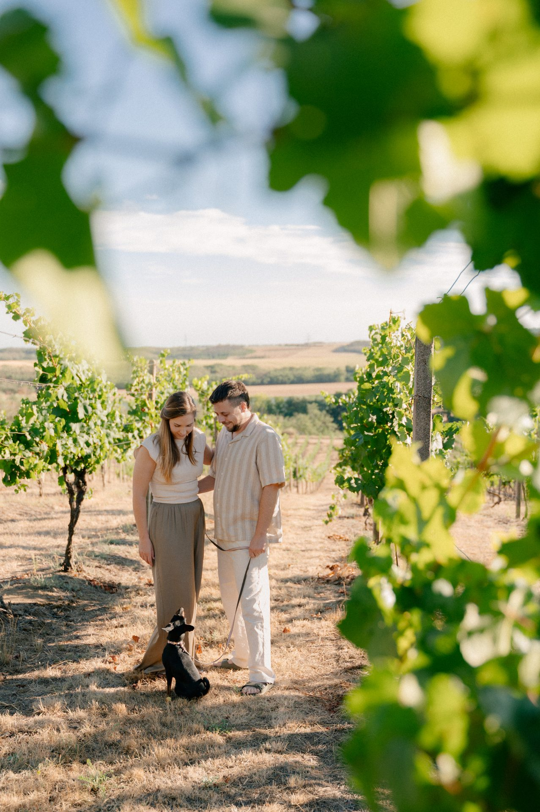
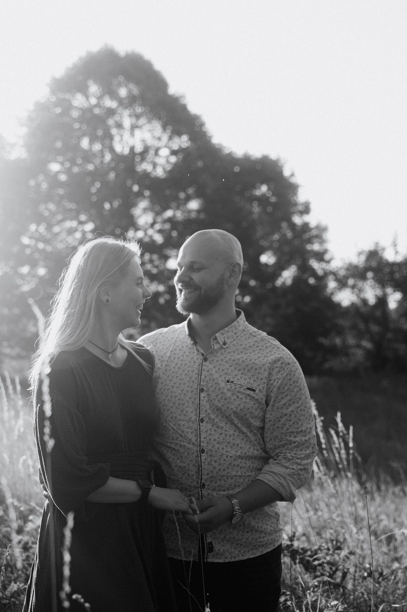
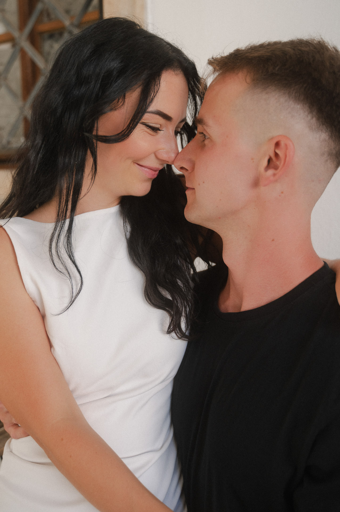
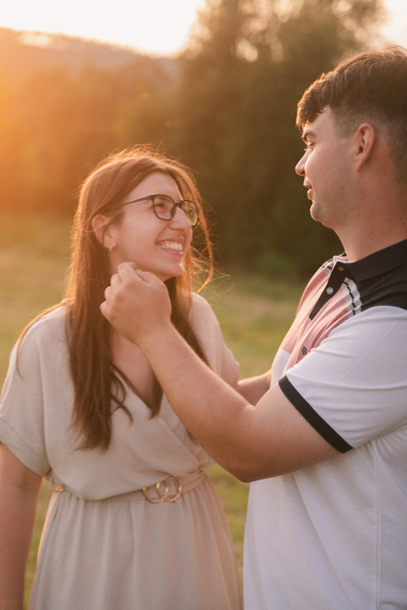
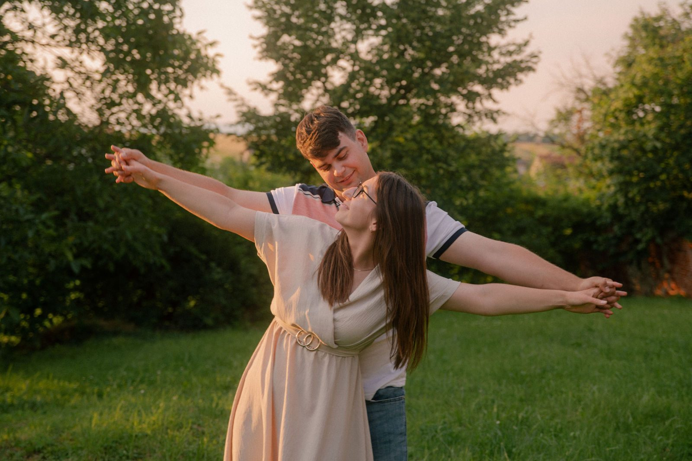
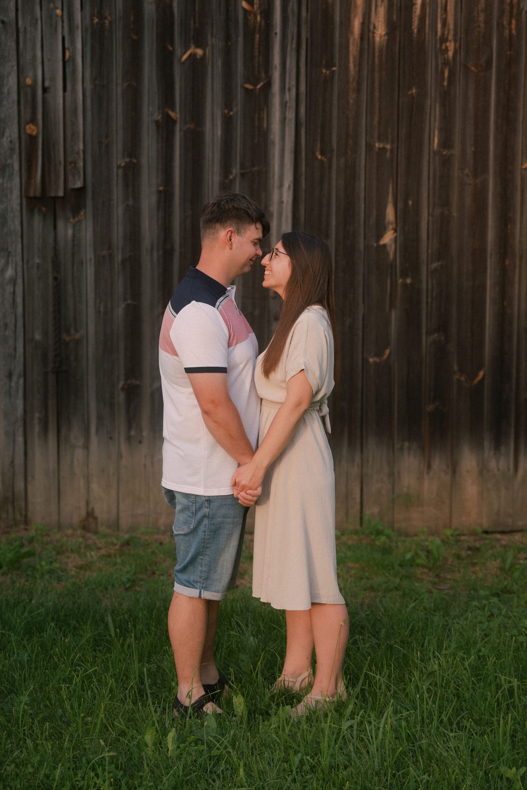
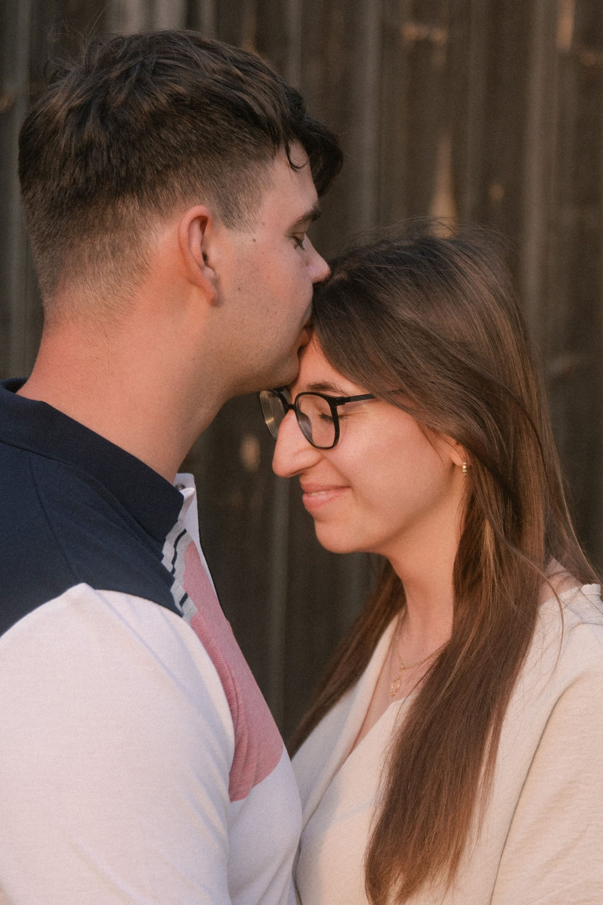
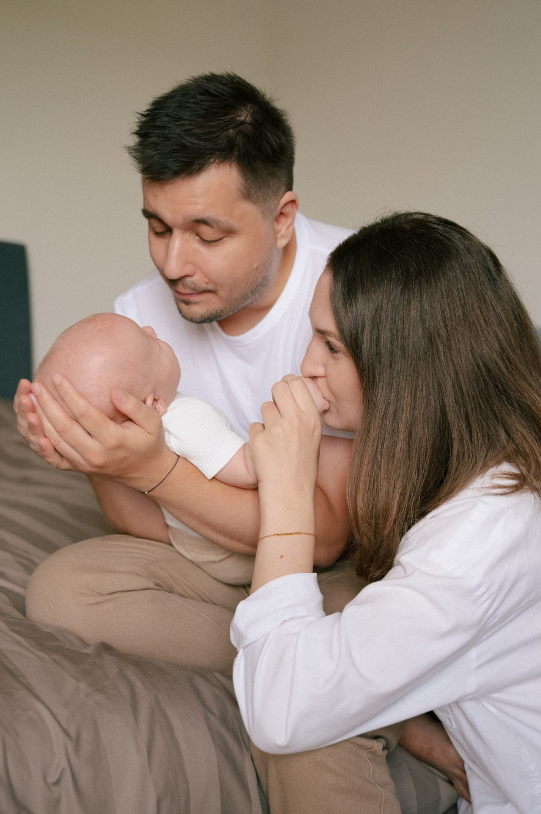
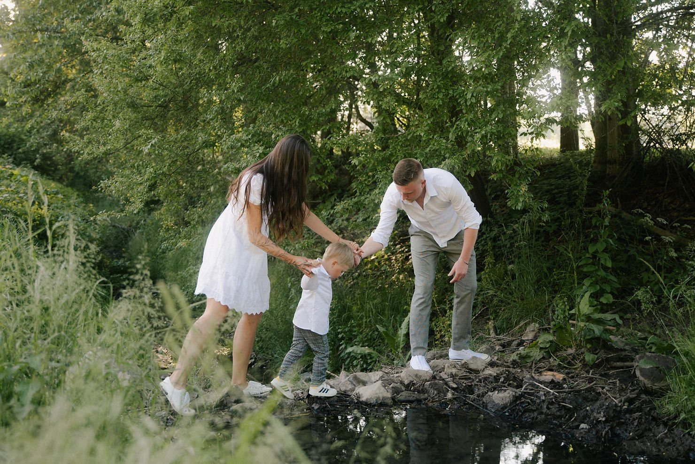

univerzální lokace na focení, které máte na dosah
Často mi lidé při domlouvání focení píšou:
„My tady kolem sebe nemáme žádné hezké místo na focení… Všude je to jen pole, silnice nebo dětské hřiště.“
A pokaždé se usměju. Protože krásné fotky nevznikají díky místu, ale primárně díky vám. ✨
Jasně, rozkvetlá louka nebo západ slunce nad lesem vypadají kouzelně. Pravda ale je, že i naprosto obyčejná lokace může na fotkách působit nádherně, když víte, jak ji využít.
1. světlo je důležitější než místo
Místo nemusí být dokonalé, pokud má dobré světlo. Stačí obyčejná ulice, okraj parku nebo vaše zahrada. Když se tam světlo opírá pod správným úhlem, fotky budou mít krásně měkký a přirozený nádech.
💡 Pro tip: zkuste se rozhlédnout kolem domu hodinu před západem slunce. Uvidíte, jak se všechno mění.


2. zeď, která má charakter
Někdy to chce jen čisté pozadí, které nechá vyniknout vás. Starší omítka, cihlová zeď, světlý beton nebo třeba vrata garáže, všechno to může fungovat skvěle.
📷 Na takových fotkách vyniknou emoce, pohyb a vaše propojení, protože nic kolem neruší pozornost.



Tohle předsvatební focení jsme fotili přímo ve vesnici snoubenců, na louce, nebo spíš zahradě za farou, která stojí hned u kostela, kde měli obřad. Byla tam i stará dřevěná vrata, která vytvořila krásnou texturu. Vystačili jsme si s málem a fotky jsou navíc spojené s místem jejich svatby.
3. lesík, kousek louky nebo cesta za domem
Myslíte si, že kolem vás není nic zajímavého? Možná byste se divili, jak kouzelně může na fotkách působit i obyčejná louka, úzká cesta za domem nebo pár stromů. Když se spojí přirozené světlo a vaše energie, vzniknou ty nejautentičtější snímky.
Navíc to má výhodu: děti se tam můžou proběhnout, pes klidně vběhne do záběru a všechno působí naprosto přirozeně.

Tohle místo kousek od Olomouce jsem vybrala speciálně na svatební focení. Chtěla jsem, abychom ho měli v blízké dojezdové vzdálenosti, a přitom aby udělalo obrovský wow efekt. Stačí pár zelených kopečků.
4. u vás doma, na dvorku nebo za domem
I váš domov může být krásnou kulisou. Zahrada plná zeleně, dřevěný plot, staré schody, koutek s květinami. Nebo váš obývák, ve kterém trávíte společné chvíle, to všechno má duši. Fotky z takového prostředí působí osobně a autenticky a může to být naprosto kouzelné.
💬 A bonus? Nemusíte nikam jezdit! 😁
Focení doma má ještě jeden přesah. Domov se časem mění: přijde rekonstrukce, nový nábytek, jiný obraz na zdi, nebo se odstěhujete. Až se na fotky podíváte za pár let, třeba i za třicet, řeknete si: „Ježiš, tady nám visel tenhle obraz a tohle byl náš koberec, úplně jsme na to zapomněli.“ Fotky tak mají o to větší váhu a o to větší příběh.
A i když máte pocit, že váš byt nebo dům není dost hezký, nevadí. Vždycky najdeme nějaké zákoutí, kde to bude fungovat. Místo udělá hodně, ale není to všechno.


Tahle rodinka svůj byt zhruba půl roku po focení prodala, aby se mohla nastěhovat do vysněného domečku. Byt ale měli strašně rádi, a tak jsou pro ně tyhle fotky teď o to důležitější. Díky nim se můžou vrátit na místo, kam se už nejspíš nepodívají, ale kde prožili spoustu důležitých chvil.
5. ulička, kavárna nebo roh domu
I když miluju fotit v přírodě, i město je plné nenápadných zákoutí, která na fotkách působí kouzelně. Starší ulička, klidná boční cesta nebo roh domu s pěknou texturou zdi, to všechno může vytvořit nádherné pozadí, které vypadá přirozeně a nadčasově. A navíc to můžete spojit i s něčím užitečným, třeba že si po focení půjdete vychutnat něco dobrého do kavárny a uděláte si hezkej celej den. ☕️

Tenhle pár mě vzal na místa, kam spolu rádi chodí na rande. Tuhle fotku jsme fotili na Staré radnici v Brně. I takhle se dá vybrat lokace: podle toho, co je vám blízké.
Takže pokud máte pocit, že „nemáte kde fotit“, věřte mi, že máte. Kouzlo není v místě, ale v pohledu, který se na něj dívá. A já věřím, že i z obyčejné cesty dokážeme vytvořit kousek vašeho příběhu. 🌿
📩 Chcete si zachytit své vzpomínky, ať už jste kdekoli? Napište mi, společně najdeme místo, na kterém vzniknou fotky, co si zamilujete. ❤️
V Brně mám míst projitých plno! Takže pokud ke mně budete chtít přijít na focení, pošlu vám tipy na místa včetně fotek a bližších informací. ❤️✨
S láskou,
S.
Znáš někoho, komu by tenhle článek pomohl? Klidně mu ho pošli.

ahoj, jsem sofi
Fotím svatby, rodiny a značky v Brně a Bratislavě. Mám ráda přirozené momenty, jemné barvy a lidi, kteří se nebojí být sami sebou.
napiš michci se o tobě dozvědět víc 🤍portfolioceníkmohlo by tě zajímat
Další články, které se ti můžou hodit.
 rady před focením · 4 min čtení
rady před focením · 4 min čteníjak se obléct na vánoční focení v ateliéru
Nevíte, co si vzít na vánoční focení? Mám pro vás pár tipů, jak se obléct tak, aby fotky působily přirozeně, útulně a nadčasově.
číst dál rady před focením · 4 min čtení
rady před focením · 4 min čtenírodinné focení bez stresu: 7 tipů, jak se připravit a užít si to naplno
Rodinné focení by nemělo být o stresu, ale o pohodě. Děti nemusí stát na místě a vy nemusíte umět pózovat. Pár tipů, jak se připravit a užít si to.
číst dál
rady před focením · 3 min čtenírodinné focení jako vzpomínka: proč má smysl ho dělat pravidelně
Čas letí. Všichni to říkáme, ale naplno si to uvědomíme většinou až při pohledu na staré fotky. Proč má smysl fotit rodinu pravidelně a proč to tak miluju.
číst dál